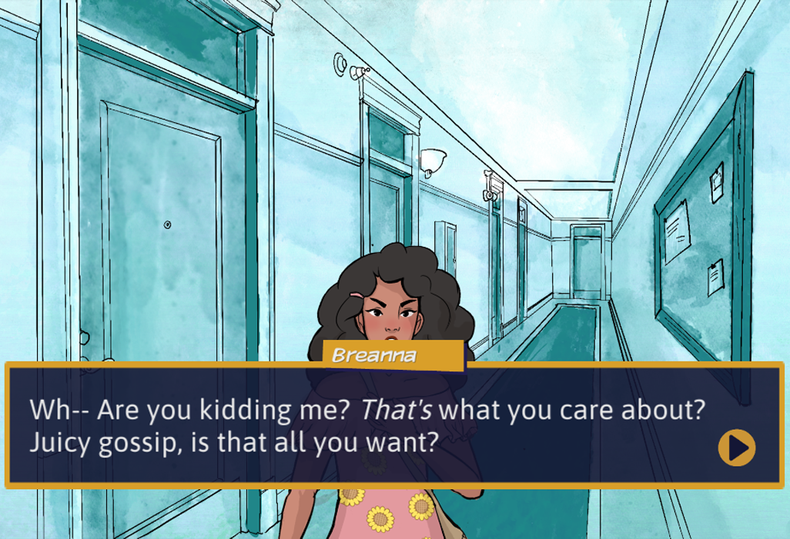
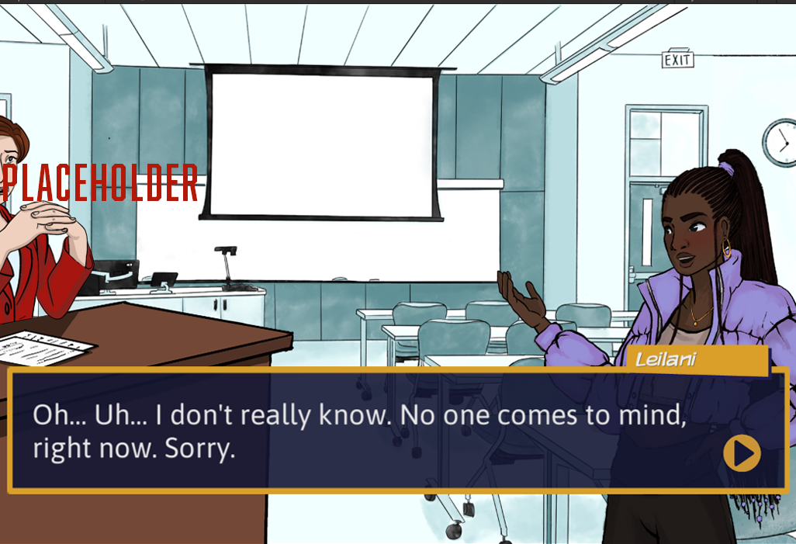
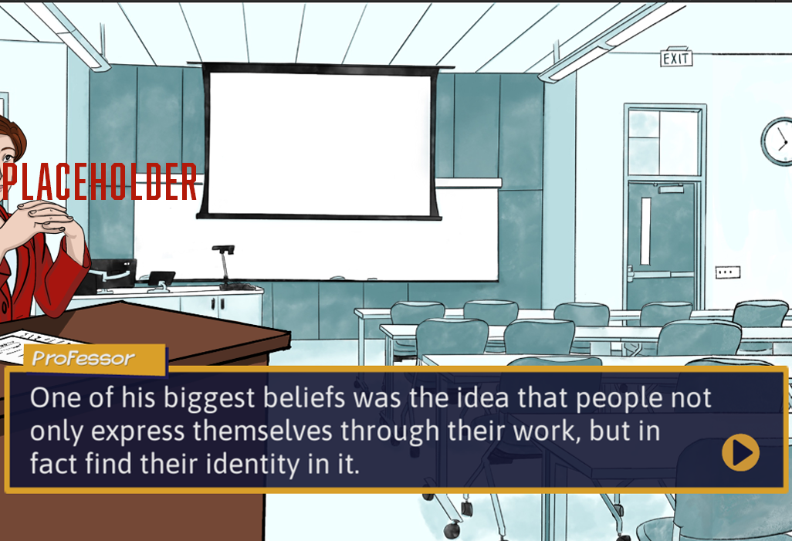
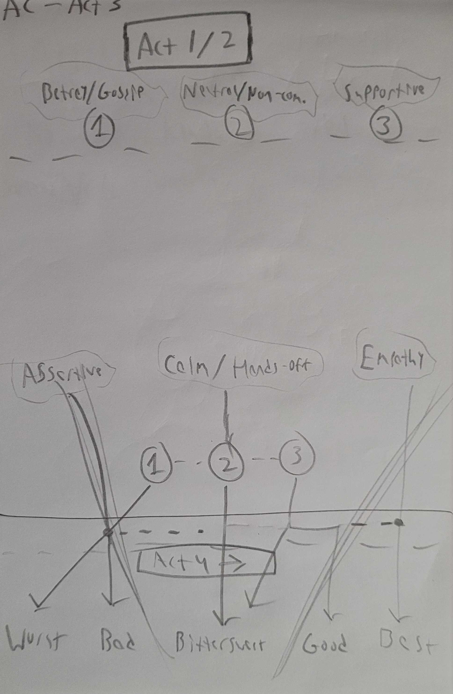

Coming into the Fall of 2025, plans for the continuing development of the Answer Campus story was coalescing towards a sort of two-front strategy:
I had taken it upon myself to enroll myself in the special topics course for Second Semester's develop whilst also remaining in my current role in the NERDLab practicum. My goal was to help maintain a sense of cohesiveness between the two teams as well as to further development my own writing and Unity workshopping.
Much of the development process for Answer Campus is structured through a series of 'soft', weekly deadlines that build up to more significant 'hard' deadlines. The soft deadlines typically pertain to objectives such as refining an existing character's arc and/or writing or finalizing a playable prototype of a feature, and are typically flexible by a week or two. Hard deadlines are usually dated alongside major showcase events and playtests, serving as rock-solid due dates for major implementations.
For Fall 2025, our main hard deadline was November 18th, where an on-campus showcase/playtest of Answer Campus was to be held to gather feedback among the student population. A playable build of the refined First Semester as well a prototype for the Second Semester's story was expected by then.
The Second Semester itself was to be separated into five major acts which would be worked on by members of the special topics course in groups; I was assigned to work on Act 3, the mid-point of Second Semester. Act 3 is an important part of Second Semester in that it introduced a new character (a professor) to the Answer Campus story and a new class appropriate to that character and the wider storyline. After a period of ideation, where we considered what would work best considering the player's current situation and the main conflict of Second Semester, the class ended up being imagined as a Philosophy course with the professor character acting as a mentor to one of the other major characters whom the Second Semester's main conflict revolved around.
On top of managing revisions to the existing work I accomplished in First Semester, which included combing through the existing conversation structure for one of the characters I wrote for, I helped refine the overall structure of Second Semester's third act for our group following the initial ideation phase; I then started work on writing and prototyping a couple of the act's major scenes, one of which that took place during the Philosophy class and served to build up the personality of this new mentor character and foreshadow future potential narrative developments through the lens of an in-universe lecture.
Much of the challenges being faced throughout these iterations and revisions is what can be describe as an expansion on an existing challenge; conversations needed to fit with each other across arcs and with the underlying themes of Answer Campus. Now, with development of Second Semester underway, that has expanded to making sure that this narrative cohesion is maintained across two different experiences. This period of ideation, revising old conversations and building entirely new ones, all has to be done in the span of around two months in time for the November playtests. Certainly a time crunch, especially given the limited resources and manpower provided to NERDLab!
One of my final deliverables for the Second Semester was to create a comprehensive writer's guide for the Unity template and associate pipeline we developed for integrating new conversations into the project. In putting together this guide, I documented the process for creating and implementing new dialogue trees within the template as well as provided a basic overview of Unity's interface and tools relevant to our work for writers who may not have used Unity or any other game development software before. The guide also details some best practices for writing interactive dialogue and utilizing the Unity tools effectively.
You can view the guide here!